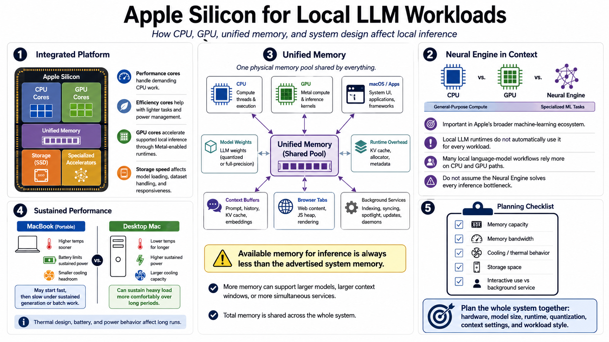

Apple Silicon Hardware Fundamentals
Connecting to LMS... Progress: in progress

Narration
Apple Silicon systems combine CPU cores, GPU cores, unified memory, storage, and specialized accelerators inside an integrated platform. Performance cores handle demanding CPU work, while efficiency cores help with lighter tasks and power management. GPU cores can accelerate supported local inference workflows through runtimes that use Apple's graphics and compute stack. Storage speed affects model loading, dataset handling, and general responsiveness.
The Neural Engine is important in Apple's broader machine learning ecosystem, but local LLM runtimes do not automatically use it for every workload. Many local language model workflows rely more heavily on CPU and GPU execution paths, especially through Metal-enabled runtimes. It is useful to know the Neural Engine exists, but it should not be assumed to solve every local inference performance problem.
Unified memory is one of the biggest planning factors. A Mac with more memory can often run larger models, larger context windows, or more simultaneous services than a lower-memory system. But total memory is shared by macOS, applications, model weights, runtime overhead, context buffers, browser tabs, and background services. Available memory for inference is always less than the headline system memory number.
Thermal design, battery, and power behavior matter for sustained workloads. A MacBook may run a short test quickly but reduce performance during long generation or batch work. A desktop Mac may sustain load more comfortably. When planning an Apple Silicon LLM setup, think about memory capacity, memory bandwidth, cooling, storage space, and whether the machine will be used interactively, as a service, or both.